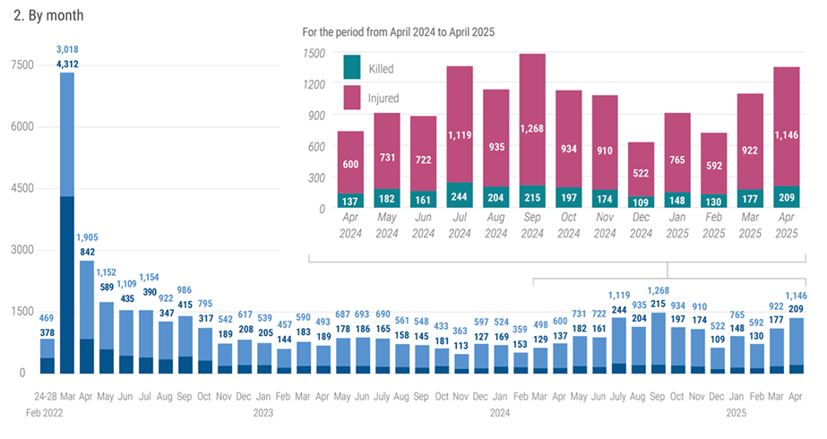
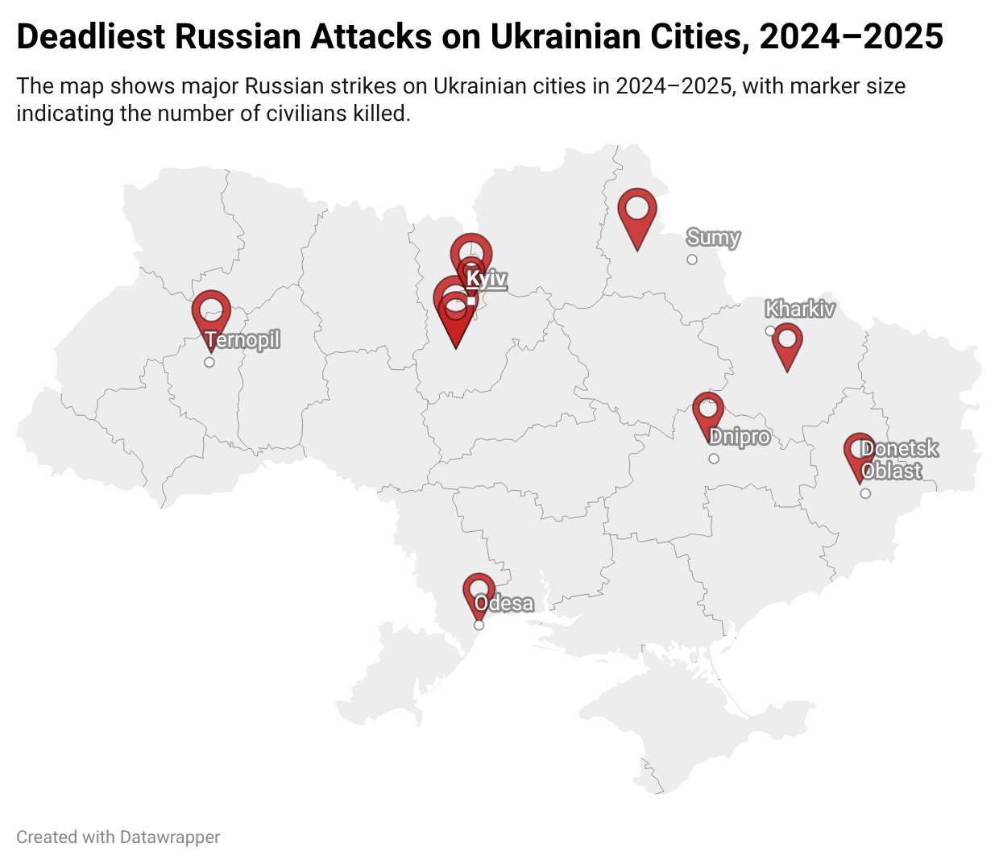
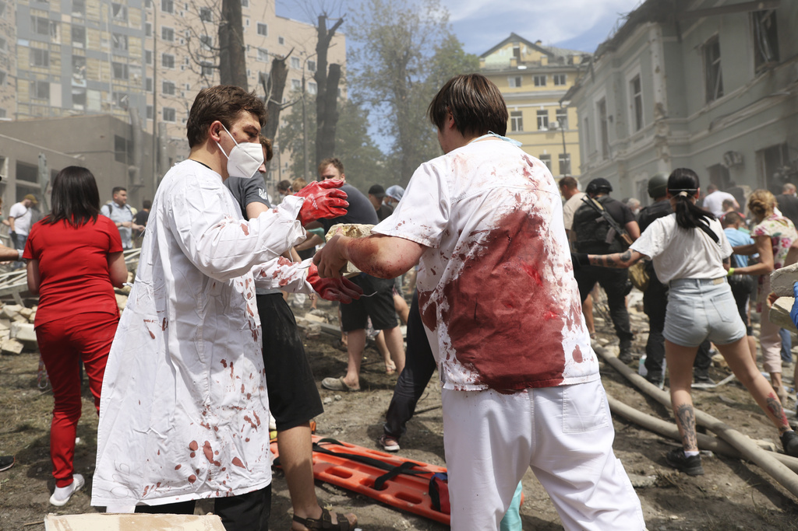
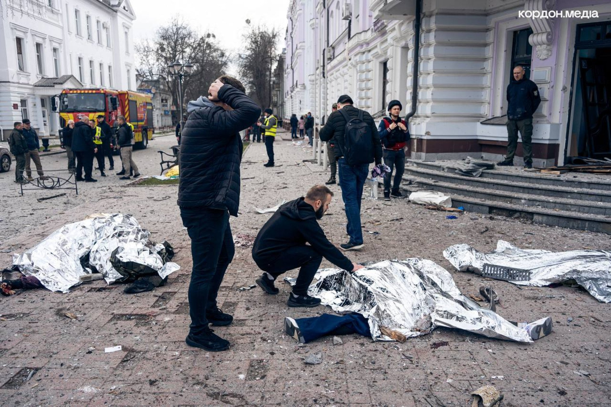
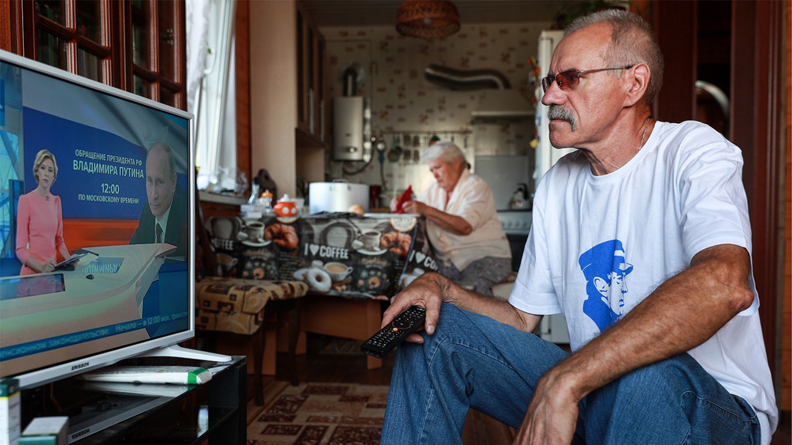
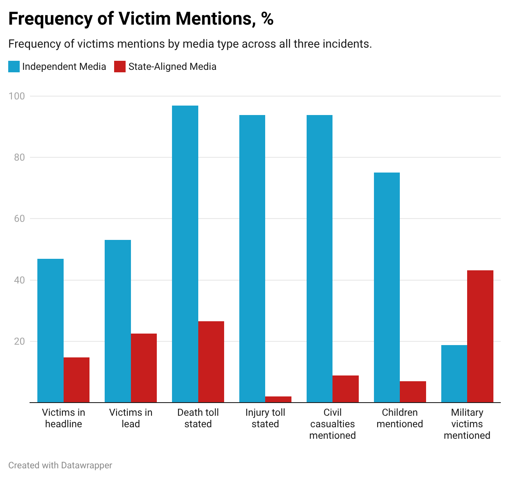
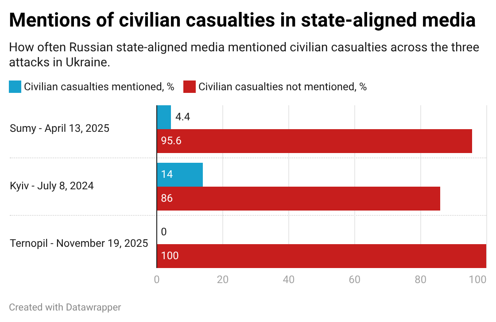
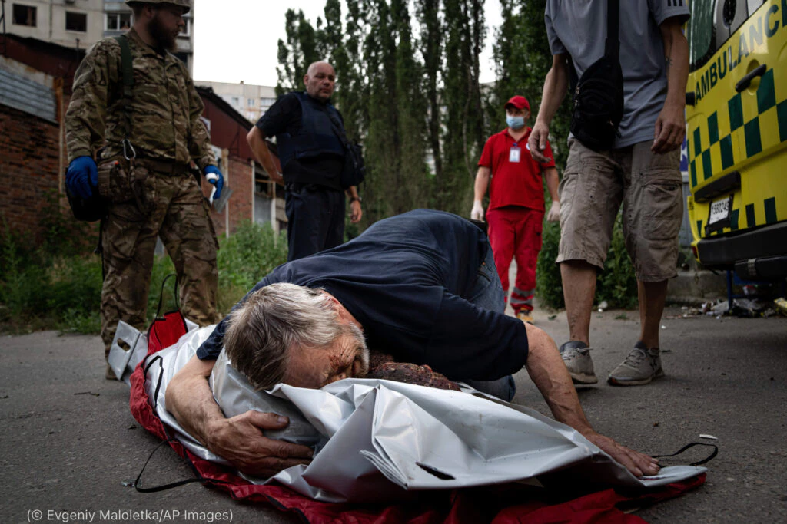

June 2026
Every Russian missile strike on a Ukrainian city leaves behind the same scenes: destroyed apartment blocks, hospitals reduced to rubble, families searching for relatives, and emergency workers pulling survivors from the debris. Yet audiences inside Russia often encounter a very different story. Instead of reading about civilians killed in missile attacks, they are told about successful strikes on military targets, Ukrainian "provocations," or air-defense missiles that allegedly caused the destruction. Sometimes they read nothing at all.
New research, based on 132 articles published by three major Russian state-controlled media outlets and one independent Russian outlet, suggests that modern Russian propaganda relies not only on disinformation but also on something much quieter: systematically making civilian victims disappear from the news.
More than four years after Russia's full-scale invasion began, Ukrainian cities remain under constant missile and drone attacks.
According to the UN Human Rights Monitoring Mission in Ukraine, more than 15,000 civilians have been killed and over 41,000 injured since February 2022. The situation has worsened rather than improved.
According to the UN, approximately 97 percent of civilian casualties occurred in territory controlled by Ukraine and were caused by Russian attacks.
These deaths matter beyond the battlefield.

Images of destroyed homes and injured children shape international public opinion, influence political debates, and motivate humanitarian support. How wars are reported affects not only what audiences know but also whom they sympathize with. Inside Russia, however, audiences consume a media environment that is almost entirely dominated by state-controlled television channels, news agencies, and newspapers. Their coverage of the same events often looks fundamentally different.

.To understand how Russian state-controlled media report civilian casualties, I analyzed coverage of three of the deadliest Russian missile attacks in 2024 and 2025.
The first was the nationwide missile strike on 8 July 2024, when Russian missiles hit several Ukrainian cities, including Kyiv. One missile struck Okhmatdyt Children's Hospital, Ukraine's largest pediatric hospital treating children with cancer and other life-threatening diseases. Across Ukraine, at least 33 civilians were killed and more than 140 injured.
The second case was the missile strike on Sumy on 13 April 2025, when two ballistic missiles hit the city center, killing 35 civilians and injuring more than one hundred others. Russian authorities claimed the strike had targeted a military gathering.
The third case examined the strike on Ternopil on 19 November 2025, where dozens of civilians, including children, were killed. Despite the scale of the attack, two of the three state-controlled outlets did not report it at all.

Kyiv and nationwide
July 8, 2024
On July 8, 2024, Russia launched one of its largest missile attacks on Ukraine, targeting Kyiv, Dnipro, Kryvyi Rih, Kropyvnytskyi, and Pokrovsk. The strike killed 44 people and injured more than 190 across the country. One of the missiles hit Okhmatdyt, Ukraine's largest children's hospital, where children with cancer and other serious illnesses were receiving treatment. The attack damaged multiple hospital buildings, interrupted life-saving medical care, and forced doctors to evacuate young patients into the streets

Sumy
April 13, 2025
On the morning of Palm Sunday, April 13, 2025, two Russian ballistic missiles struck the center of Sumy, a city in northeastern Ukraine. The attack hit a busy area where residents were gathering for the holiday, destroying civilian infrastructure and public transport. Thirty-five people were killed, including children, and 117 others were injured, making it one of the deadliest attacks on Ukrainian civilians that year. The attack immediately became the subject of competing narratives in Russian and independent media.

Ternopil
November 19, 2025
On November 19, 2025, Russian missiles struck the western Ukrainian city of Ternopil, killing 34 civilians and injuring nearly 100 others. The victims included several children, while residential buildings and other civilian infrastructure suffered extensive damage. The attack became one of the deadliest strikes on western Ukraine since the beginning of the full-scale invasion. Unlike the attacks on Kyiv and Sumy, the strike on Ternopil received remarkably little attention in Russian state-controlled media.
Since the beginning of Russia's full-scale invasion of Ukraine in February 2022, state-controlled media have played a central role in shaping the domestic narrative of the war. Rather than providing comprehensive reporting from the battlefield, they consistently present the conflict through the lens of official Kremlin messaging. Coverage emphasizes Russian military successes, portrays the invasion as a defensive operation against the West, and largely avoids information that could undermine public support for the war. Civilian suffering in Ukraine rarely becomes the central focus unless it can be explained in a way that absolves Russia of responsibility.

When civilian casualties cannot be ignored, state-controlled outlets tend to rely on a limited set of recurring narratives. Reports frequently attribute deaths to Ukrainian air defense, accuse Ukrainian authorities of using civilians as "human shields," or describe incidents as staged provocations designed to discredit Russia. At the same time, stories highlighting successful strikes on military targets receive extensive attention, often accompanied by statements from Russian officials or military commentators. This selective reporting creates a version of the war in which military achievements remain highly visible while civilian victims are minimized, depersonalized, or omitted from the public conversation altogether.
 Independent outlet Meduza almost always informed readers how many civilians had been killed and injured. It regularly mentioned children among the victims and often identified individual people through names, professions, photographs, or personal stories. State-controlled outlets rarely did. Across the three attacks analyzed, none of the state-controlled outlets consistently reported the number of civilians killed by Russian strikes. When casualties appeared in headlines or opening paragraphs, they were frequently presented as military losses rather than civilian deaths. The difference becomes particularly visible in coverage of the strike on Okhmatdyt Children's Hospital. Independent media focused on patients, doctors, families, and children receiving treatment. State-controlled outlets instead concentrated on official statements claiming that a Ukrainian air-defense missile had struck the hospital and accusing Kyiv of using civilians as a "human shield." Civilian victims themselves largely disappeared from the story. The Ternopil attack demonstrated an even stronger form of omission. RIA Novosti merely reported "explosions" without explaining their cause or mentioning civilian deaths. The other two state-controlled outlets ignored the attack entirely.  The attribution of responsibility also followed a clear pattern. When Russian missile strikes could be presented as military successes, state-controlled media openly acknowledged that Russian forces had carried them out. When civilians died, however, responsibility became much less certain. Coverage of the Okhmatdyt hospital repeatedly cited official claims that Ukraine's own air-defense missile had caused the destruction. During the Sumy strike, state-controlled outlets emphasized the Russian Ministry of Defense's claim that 60 Ukrainian soldiers had been killed while almost entirely ignoring civilian casualties. When no convincing official explanation was available, coverage often became deliberately vague. Rather than describing missile strikes, reports referred simply to "explosions," avoiding any discussion of responsibility. This suggests that attribution functions less as factual reporting than as a narrative tool. Responsibility is claimed when it supports official messaging and blurred when civilian harm becomes impossible to ignore.
Propaganda is commonly understood as the spread of false information. The findings suggest that omission deserves equal attention. The most effective way to shape public opinion may not always be to invent alternative realities. Sometimes it is enough simply to decide which facts deserve attention — and which do not.
If audiences repeatedly hear about military targets but rarely about civilian victims, they gradually learn to understand the war through military success rather than human suffering.

Journalism determines not only what societies know but also whose lives become visible. The Russian state-controlled media examined in this study rarely celebrate civilian deaths directly. Instead, they often remove those deaths from public attention altogether.
The result is a version of the war in which civilians gradually disappear — not because they were never there, but because they are no longer allowed to occupy the center of the story. For audiences inside Russia, this silence may shape public understanding of the war just as profoundly as any explicit piece of propaganda.
Every missile strike leaves behind destroyed homes and grieving families. Whether those victims become part of the public memory, however, depends on how the story is told. This study suggests that in Russian state-aligned media, many civilian victims disappear not from the battlefield, but from the narrative itself.